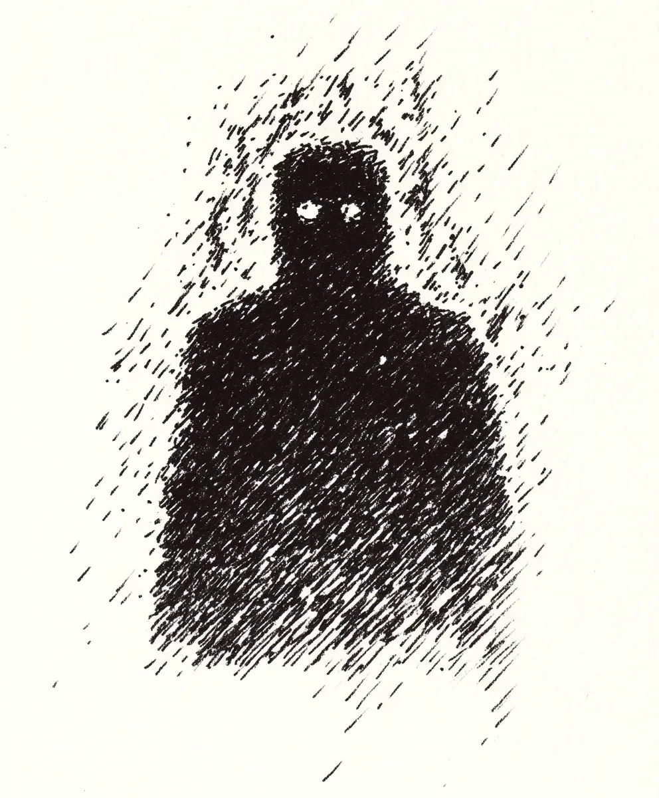

비가 내리는 것을 오래 바라보면, 때로는 비가 당신을 다시 응시한다고들 말합니다.
[They say if you stare into the downpour long enough, sometimes the rain stares back.]
3주 전에 처음 그것을 알아챘습니다. 헨더슨 가족의 차고 지붕을 무너뜨리고 지하실을 잠기게 만든 첫 폭우 때가 아니라, 그 뒤를 이은 잔잔한 여운 속이었습니다—끝없이 계속될 것만 같은 속삭이는 듯한 가랑비가 내리던 날. 저는 현관에서 담배를 피우며 난간에 맺히는 빗방울을 바라보고 있었고, 그때 제 주변 시야의 무언가가 스르륵 움직였습니다.
[I first noticed it three weeks ago. Not during the initial deluge that flooded the basement and collapsed the Hendersons’ carport, but during the gentle aftermath—that persistent drizzle that seems to whisper promises of never ending. I was smoking on the porch, observing droplets collect on the railing, when something shifted in my peripheral vision.]
그저 빛의 장난이라고 스스로에게 말했습니다. 그저 비가 그림자와 장난치는 것일 뿐이라고.
[Just a trick of light, I told myself. Just the rain playing with shadows.]
하지만 제가 고개를 완전히 돌렸을 때, 그것이 거기 있었습니다. 잔디와 숲이 만나는 제 부동산 가장자리에 서 있는 형체—그 뒤의 어둠보다 더 어두운 실루엣이었습니다. 그리고 그 눈들. 맙소사, 그 눈들. 얼굴의 검은 공간에 떠 있는 것 같은 두 개의 완벽한 하얀 원반이었습니다.
[But when I turned my head fully, it was there. A figure standing at the edge of my property where lawn meets woods—a silhouette darker than the darkness behind it. And those eyes. Christ, those eyes. Two perfect white discs that seemed to float in the blackness of its face.]
눈을 깜빡였더니, 그것은 사라졌습니다.
[I blinked, and it was gone.]
“잠이 부족해서 그래,” 젖은 나무에 담배를 비벼 끄며 중얼거렸습니다. “그게 다야.”
[“Lack of sleep,” I muttered, crushing my cigarette against the wet wood. “That’s all.”]
내가 본 것을 무시해서는 안 된다는 걸 알았어야 했습니다. 6개월 전 이혼 서류가 도착한 이후로 수면은 저의 적이었습니다. 회사가 “구조조정"을 하고 책상 위 화분과 가족사진이 담긴 종이상자만 남겨준 이후로요. 한때는 주말 휴양지였지만 이제는 제 영구 거처가 된 이 집의 고립감은, 비가 시작되기 훨씬 전부터 이미 저를 짓누르고 있었습니다. 아마도 그래서 제가 폭풍우를 그렇게 열심히 관찰하기 시작했나 봅니다. 적어도 그것은 단조로움 속의 변화였으니까요.
[I should have known better than to dismiss what I saw. Sleep had been my enemy since the divorce papers arrived six months ago. Since the company "restructured” and left me with nothing but a cardboard box of desk plants and family photos. The isolation of this house—once a weekend getaway, now my permanent residence—had been crushing me long before the rains began. Perhaps that’s why I started studying the storms so intently. They were, at least, a change in the monotony.]
두 번째로 그 형체를 봤을 때, 그것은 차도 끝에 서 있었습니다. 세 번째는 참나무 옆이었죠. 매번 나타날 때마다 비가 내렸고, 매번 볼 때마다 그것은 제 집에 더 가까워졌습니다. 10미터 거리에서. 그다음엔 5미터. 그리고 마침내 제 현관 계단 아래에서. 항상 지켜보고 있었습니다. 제가 다가가거나 사진을 찍으려 할 때면 항상 사라졌습니다.
[The second time I saw the figure, it stood at the edge of the driveway. The third time, beside the oak tree. Each appearance coincided with rainfall, each sighting bringing it closer to my house. Ten meters away. Then five. Then at the bottom of my porch steps. Always watching. Always gone when I tried to approach or photograph it.]
물론, 아무도 저를 믿지 않았습니다. 아이들에 관해 매주 통화하는 전 아내도 아니었고, 제 불안 약을 두 배로 늘린 머서 박사도 아니었습니다. 심지어 세 잔의 위스키를 마신 후에는 어떤 황당한 이론도 들어줄 바에서 만난 엘리조차도 저를 반신반의했습니다.
[No one believed me, of course. Not my ex-wife during our weekly calls about the kids. Not Dr. Mercer, who doubled my anxiety medication. Even Eli at the bar, who’d listen to any wild theory after his third whiskey, only half-believed me.]
“그림자 사람들 같군요,” 그가 음모론자처럼 몸을 기울이며 말했습니다. “제 사촌도 지하실에서 하나를 봤어요. 몇 주 동안 그를 따라다니다가 사라졌대요.”
[“Sounds like shadow people,” he’d said, leaning in conspiratorially. “My cousin saw one in his basement. Followed him for weeks before it disappeared.”]
하지만 저는 그의 눈에서 의심을 볼 수 있었습니다. 그가 다른 손님들을 힐끗 보며 “이 사람 좀 봐"라고 말하는 듯한 눈빛이었죠. 그의 이야기는 그저 이야기일 뿐이었습니다. 제 경험은 실제였고, 저는 단지 술자리에서 들려주는 이야기로 저를 달래주는 것이 아니라, 정말로 무슨 일이 일어나고 있는지 이해해 줄 누군가가 필요했습니다.
[But I could see the doubt in his eyes, the way he glanced at the other patrons as if to say, "Get a load of this guy.” His stories were just that—stories. Mine was real, and I needed someone to truly understand what was happening, not just humor me with tales told over drinks.]
저는 여덟 살 때 할아버지가 침실 창문을 통해 뇌우를 바라보던 모습을 기억했습니다. 그의 표정은 인식과 두려움이 섞여 있었습니다. 제가 무엇을 보고 있냐고 물었을 때, 할아버지는 커튼을 닫고 절대 비를 오래 바라보지 말라고 하셨습니다. 그때는 이해하지 못했습니다. 지금은 할아버지가 제가 보고 있는 것을 보셨던 건 아닐까 궁금해졌습니다.
[I remembered being eight years old, watching my grandfather through his bedroom window as he stared out at a thunderstorm, his expression a mixture of recognition and fear. When I asked him what he saw, he’d closed the curtains and told me never to look too long at the rain. I hadn’t understood then. Now I wondered if he’d seen what I was seeing.]
기상학자들은 이 폭풍이 수십 년 만에 최악이 될 것이라고 예측했습니다. 저는 물품을 비축했습니다: 배터리, 통조림 식품, 생수병. 폭풍을 두려워해서가 아니라, 그것이 제 방문자를 데려올 것을 알았기 때문입니다. 그리고 이번에는, 제가 준비되어 있을 것입니다.
[The meteorologists predicted the storm would be the worst in decades. I stocked up on supplies: batteries, canned food, bottled water. Not because I feared the storm, but because I knew it would bring my visitor. And this time, I would be ready.]
모든 창문에 카메라를 설치했습니다. 각 출입구에 동작 감지 센서를. 현관에는 음성 녹음기를. 비는 해질녘에 시작되었고, 부드러운 빗소리가 빠르게 지붕을 때리는 굉음으로 변했습니다. 저는 모니터로 둘러싸인 거실에 앉아 기다렸습니다.
[I set up cameras in every window. Motion sensors at each entrance. A voice recorder on the porch. The rain began at dusk, a gentle patter that quickly became a roar against the roof. I sat in my living room, surrounded by monitors, waiting.]
오전 2시 41분, 전원이 나갔습니다.
[At 2:41 AM, the power went out.]
백업 발전기가 켜지려다 시동이 걸리지 않아 저는 완전한 어둠 속에 남겨졌습니다. 카메라들이 꺼졌습니다. 동작 감지 센서도 마찬가지였죠. 심지어 완전히 충전된 제 휴대폰도 검은 화면만 보여줬습니다. 집이 갑자기 더 작아진 것 같았습니다. 마치 제가 보지 않는 사이에 벽들이 조금씩 다가온 것처럼요. 공기는 오존과 다른 무언가의 냄새 젖은 흙과 오래된 돌과 같은 냄새로 무거워졌습니다.
[The backup generator sputtered but failed to start, leaving me in complete darkness. The cameras went dead. The motion sensors, too. Even my fully charged phone displayed only a black screen. The house felt suddenly smaller, as if the walls had inched closer while I wasn’t looking. The air grew heavy with the scent of ozone and something else—something like wet earth and old stones.]
현관문에서 부드러운 두드림 소리가 들려왔습니다. 무작위적인 빗소리가 아니라, 의도적인 것이었습니다. 리듬감 있게. 세 번 두드림, 멈춤. 세 번 두드림, 멈춤.
[A soft tapping came from the front door. Not the random patter of rain, but deliberate. Rhythmic. Three taps, pause. Three taps, pause.]
“누구세요?” 제가 부끄러울 정도로 가느다란 목소리로 외쳤습니다.
[“Who’s there?” I called, my voice embarrassingly thin.]
두드리는 소리가 멈췄습니다.
[The tapping stopped.]
저는 무기로도 사용할 수 있는 무거운 금속 손전등을 집어들고 문으로 다가갔습니다. 안과 밖, 안전과 미지 사이의 그 얇은 경계선으로요. 물이 문 아래로 스며들어 원목 바닥에 점점 커지는 웅덩이를 형성했습니다. 하지만 이것은 맑은 빗물이 아니었습니다. 잉크처럼 검고 기름처럼 진했지만, 그것은 부자연스러운 목적을 가지고 움직였습니다. 액체가 보통 그렇듯 바깥쪽으로 퍼지지 않고 마치 살아있는 것처럼 스스로를 모으고 있었습니다.
[I grabbed my flashlight—the heavy metal one that could double as a weapon—and approached the door, that thin threshold between inside and out, between safety and the unknown. Water seeped beneath it, forming a growing puddle on the hardwood. But this wasn’t clear rainwater. It was black as ink, thick as oil, yet it moved with unnatural purpose, not spreading outward as liquid should but gathering itself like something alive.]
문이 또 다른 일련의 두드림으로 진동했고, 이번에는 더 강하게 느껴졌습니다.
[The door vibrated with another series of taps, more insistent now.]
“뭘 원하는 거야?” 제가 소리쳤고, 잠시 분노가 두려움을 압도했습니다.
[“What do you want?” I shouted, anger temporarily overriding fear.]
대답하는 목소리는 문 너머가 아닌 제 뒤에서, 집 안에서 들려왔습니다. 그것은 파이프를 통해 흐르는 물소리 같았고, 언덕 아래로 굴러가는 자갈 소리 같았으며, 수천 개의 속삭임이 겹쳐진 것 같았습니다.
[The voice that answered came not from beyond the door but from behind me, inside the house. It sounded like water rushing through pipes, like gravel tumbling down a hillside, like a thousand whispers layered atop one another.]
“보여지기 위해서,” 그것이 말했습니다.
[“To be seen,” it said.]
저는 휙 돌아섰고, 손전등 빛이 어둠을 가로질렀습니다. 아무것도 없었습니다. 하지만 공기가 달라졌습니다—더 무거워지고, 습기를 넘어선 무언가로 충전된 느낌이었습니다. 제 손전등 빛이 복도 거울에서 움직임을 포착했습니다. 그림자 속에서 움직이는 공허였습니다.
[I whirled around, flashlight beam cutting through darkness. Nothing. But the air felt different—heavier, charged with something beyond humidity. My beam caught movement in the hallway mirror, a void shifting against shadows.]
그 형체가 제 뒤에 서 있었고, 빛이 없음에도 불구하고 그 반사상은 선명했습니다. 그 눈들—제가 생각했던 것처럼 빛나는 것이 아니라, 밤하늘에 뚫린 창문 같았습니다. 그 너머로 광활하고 텅 빈 무언가를 드러내고 있었습니다.
[The figure stood behind me, its reflection clear despite the absence of light. Those eyes—not glowing as I’d thought, but more like windows cut into the night sky, revealing something vast and empty beyond.]
“당신을 봤어요,” 저는 뒤돌아볼 수 없어 그 반사상에게 말했습니다. “몇 주 동안이나. 당신은 뭐죠?”
[“I’ve seen you,” I said, unable to turn around, speaking to its reflection. “For weeks now. What are you?”]
“무엇이 아니라,” 그것이 대답했고, 불가능한 소리들의 합창이 어떻게든 단어를 형성했습니다. “누구냐는 것이지.”
[“Not what,” it replied, its chorus of impossible sounds somehow forming words. “Who.”]
문 아래에서 흘러나온 검은 액체가 바닥을 가로질러 제 발에 닿았습니다. 그것은 젖어있지 않았습니다. 차가웠습니다—화상을 입힐 정도로 차가웠죠. 그것이 닿는 곳에서, 저는 습기가 아닌 이상한 공허함을 느꼈습니다. 마치 제 일부가 부드럽게 지워지고 있는 것 같았습니다.
[The black liquid from beneath the door had spread across the floor, reaching my feet. It wasn’t wet. It was cold—a cold that burned. Where it touched, I felt not moisture but a strange absence, as if that part of me was being gently erased.]
“당신이 나를 지켜보고 있었어요,” 제가 말했습니다.
[“You’ve been watching me,” I said.]
“아니오.” 그 형체의 머리가 살짝 기울었습니다. “당신이 나를 지켜보고 있었죠.”
[“No.” The figure’s head tilted slightly. “You’ve been watching me.”]
이해가 마치 댐을 무너뜨리는 물처럼 저를 덮쳤습니다—갑작스럽고, 압도적이며, 어쩌면 필연적인. 제가 비를 바라보며 보낸 끝없는 시간들, 패턴을 찾고, 의미를 찾던 시간들. 제 삶의 혼돈 속에서 뭐라도 찾아야 한다는 절박한 필요.
[Understanding washed over me like water breaking through a dam—sudden, overwhelming, and somehow inevitable. The endless hours I’d spent staring into the rain, searching for patterns, for meaning. The desperate need to find something—anything—in the chaos of my life.]
“우리는 서로를 찾아요,” 그것이 계속했고, 그 겹겹의 목소리는 어떻게든 멀리 있으면서도 친밀하게 가까웠습니다. “지켜보는 자와 지켜보이는 자. 찾는 자와 찾아지는 자.”
[“We find each other,” it continued, its layered voice somehow both distant and intimately close. “The watchers and the watched. The seekers and the sought.”]
“내게서 뭘 원하는 거죠?” 제 목소리가 갈라졌습니다.
[“What do you want from me?” My voice cracked.]
“인정,” 그것이 단순하게 말했습니다. “당신이 나에게서 원하는 것처럼.”
[“Recognition,” it said simply. “As you want from me.”]
검은 액체가 중력을 거스르며 올라오기 시작했고, 살아있는 것처럼 제 다리를 타고 올라왔습니다. 저를 익사시키는 것이 아니라 저를 감싸안는 것 같았습니다. 이제 발목까지, 이제 무릎까지. 차갑지 않은 차가움이 제 뼈 속으로 스며들었고, 그와 함께 이미지들이 떠올랐습니다—다른 삶들, 다른 관찰자들, 시간을 통틀어 다른 폭풍우들의 섬광. 창가에, 동굴 입구에, 숲의 가장자리에 서서 어둠을 응시하고 그 어둠이 다시 응시하는 것을 발견하는 사람들.
[The black liquid began to rise, defying gravity, climbing my legs like a living thing. Not drowning me but embracing me. Now ankle-deep, now knee-deep. The cold that wasn’t cold seeped into my bones, and with it came images—flashes of other lives, other watchers, other rainstorms throughout time. People standing at windows, at cave entrances, at the edge of forests, staring into the darkness and finding it staring back.]
제 할아버지의 얼굴, 나이 들고 아는 듯한 표정으로, 지금 제가 짓고 있는 것과 같은 표정으로 폭풍을 바라보고 있었습니다.
[My grandfather’s face, aged and knowing, watching the storm with the same expression I now wore.]
“우리는 경계선이다,” 그 형체가 말했고, 그 소리의 배열이 이제 제 머릿속에 있었습니다. “살아있지도 죽지도 않은. 여기 있지도 사라지지도 않은. 우리는 보이는 것과 보이지 않는 것 사이에 서 있다.”
[“We are the threshold,” the figure said, its arrangement of sounds now inside my head. “Neither living nor dead. Neither here nor gone. We stand between what is seen and unseen.”]
액체가 제 가슴, 목, 턱까지 올라왔습니다. 저는 겁에 질려 있어야 했고, 그것에 맞서 싸웠어야 했습니다. 하지만 대신, 저는 이상한 평화가 저를 감싸는 것을 느꼈습니다. 비의 맛이 제 입안을 채웠습니다—물이 아니라 고대의 무언가, 최초의 숲, 최초의 바다에 내렸던 무언가.
[The liquid reached my chest, my neck, my chin. I should have been terrified, should have fought against it. Instead, I felt a strange peace washing over me. The taste of rain filled my mouth—not water but something archaic, something that had fallen on the first forests, the first oceans.]
“나도 당신처럼 될 건가요?” 제가 물었습니다.
[“Will I become like you?” I asked.]
그 형체의 반사상이 미소 지었습니다—적어도, 그것의 입이 있어야 할 어둠이 위로 휘어졌습니다.
[The figure’s reflection smiled—or at least, the darkness where its mouth should be curved upward.]
“당신은 이미 그렇습니다,” 그것이 대답했습니다. “당신이 처음 나를 봤을 때부터. 당신이 처음으로 진정 비를 들여다봤을 때부터.”
[“You already are,” it replied. “You have been since you first saw me. Since you first truly looked into the rain.”]
액체가 제 입, 코, 눈을 덮었습니다. 하지만 저는 여전히 숨을 쉴 수 있었고, 여전히 볼 수 있었습니다. 그 형체는 더 이상 제 뒤에 있지 않고 제 주변 모든 곳에, 제 일부가 되어 있었습니다. 그리고 저는 마침내 그것이 의미하는 바를 이해했습니다.
[The liquid covered my mouth, my nose, my eyes. But I could still breathe, still see. The figure was no longer behind me but all around me, part of me. And I understood at last what it meant.]
어떤 사람들은 평생 동안 세상을 정말로 바라보지 않고 살아갑니다. 그들은 표면, 반사, 현실의 얇은 겉면만 봅니다. 하지만 다른 이들—관찰자들, 탐색자들—우리는 사물 사이의 공간을 너무 오래 응시합니다. 우리는 빗방울의 패턴, 나무 사이의 그림자, 심장 박동 사이의 침묵 속에서 의미를 찾습니다.
[Some people go their entire lives never really looking at the world. They see surfaces, reflections, the thin veneer of reality. But others—the watchers, the seekers—we stare too long into the spaces between things. We search for meaning in the patterns of raindrops, in the shadows between trees, in the silence between heartbeats.]
그리고 때로는, 우리가 충분히 오래 바라보면, 우리가 찾은 것이 다시 우리를 바라봅니다.
[And sometimes, if we look long enough, what we find looks back.]
폭풍은 아침이 되자 지나갔습니다. 이웃들은 피해를 평가하고, 마당에서 나뭇가지를 치우고, 밤의 분노에 대한 이야기를 나누기 위해 나왔습니다. 그들 중 누구도 숲의 가장자리에 서서 그들의 집, 그들의 삶을 지켜보고 있는 저를 알아차리지 못했습니다.
[The storm passed by morning. The neighbors emerged to assess damage, to clear branches from yards, to exchange stories of the night’s fury. None of them noticed me standing at the edge of the woods, watching their houses, their lives.]
그들 중 누구도 제 눈—그림자로 만들어진 얼굴에 있는 두 개의 완벽한 하얀 원반—을 보지 못했습니다.
[None of them saw my eyes—two perfect white discs in a face made of shadow.]
파란 집에 사는 여자를 제외하고는 아무도 보지 못했습니다. 그녀는 신문을 가져가다가 멈춰 서서 저를 똑바로 바라보고 인식의 표시로 고개를 끄덕였습니다. 저는 그녀에게서 한때 저를 사로잡았던 것과 같은 외로움, 같은 탐색을 보았습니다. 그녀는 다음 비가 올 때 지켜볼 것입니다.
[None of them, except for the woman in the blue house, who paused while collecting her newspaper, looked directly at me, and nodded in recognition. I saw in her the same loneliness, the same searching that had once consumed me. She would be watching when the next rain came.]
그리고 저는 그곳에 있을 것입니다. 빗방울 사이의 공간에서 기다리며, 지켜보는 자와 지켜보이는 자가 하나가 되는 그곳에서.
[And I would be there, waiting in the spaces between raindrops, where the watchers and the watched become one.]